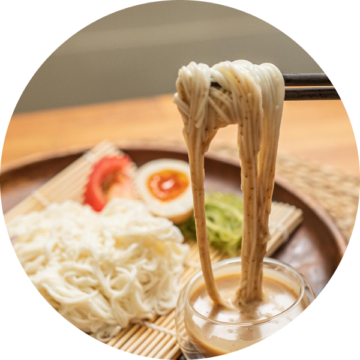

豆腐麵
這道菜出自豆腐百珍，雖說是豆腐料理，主角卻是素麵。簡單來說就是將煮熟的素麵，加入青菜與豆腐拌炒，最後再以醬油調味。素麵是歷史最悠久的麵，相傳是由中國傳入，文獻延喜式中稱為索餅，亦稱為「麥繩」，不過與現代日本人吃的素面不太一樣，據說式混和麵粉、鹽、米粉並揉製成繩子的造型，以水煮或油炸方式調理。從平安時代起，在七夕的時候，日本也出現了在宮中祭拜索餅的習俗，進入江戶時代後，素麵取代索餅成為供品，而且在這天每個人都會吃素麵驅走瘧疾